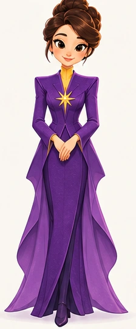
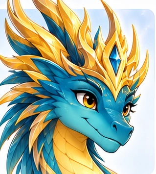

Сказки Казани
Сказки семьи
Зиланты
Зиланта — мама семерых маленьких драконов. У каждого свой характер и свой день недели. Загляни в семейный альбом и познакомься с героями сказочной Казани.
В гости к драконам
Семейный альбом
Семеро под одним крылом
Открой портрет, чтобы рассмотреть зилантёнка поближе.


Мама и папа
К кому лететь
за советом?
Когда семеро рассказывают наперебой, Зиланта выслушает каждого. А если кому-то страшно расправить крылья, рядом Зилант — папа и защитник семьи.

Первая книга
Загляни под обложку
В Казани у Зиланты и Зиланта подрастают семеро детей. Каждый хорош по-своему. Как различить всю эту крылатую компанию? Открой разворот и посмотри, как художник изобразил каждого.